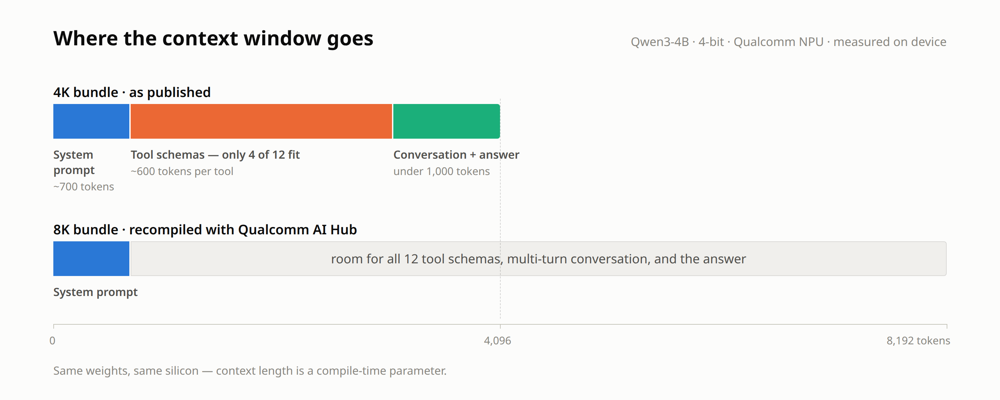

On-device LLMs: the context window is the spec to watch
Notes from running Qwen3-4B on a Qualcomm NPU. August 2026.
I've been running Qwen3-4B on the NPU of a Qualcomm board. On this platform you don't so much load a model as install one: models ship as precompiled NPU binaries, and their shape — including the context window — is baked in when the bundle is compiled. The published bundle gives you 4K tokens.
4K sounded fine. Then I built an agent on top of it.
Here's the budget I was actually working with:
- The system prompt ate about 700 tokens.
- Every tool definition — the JSON schema the model needs to call an API — cost roughly 600 more.
- With four tools loaded, that left under 1,000 tokens for the conversation, the tool's output, and the answer.
That last line is the whole problem. My agent has 12 tools, so I could only expose 4 at a time and had to rotate subsets. One fat tool result — a diagnostics dump, an interface table — could blow the window and fail the entire request. And chat history? Forget it. Every request was effectively single-shot.

My first instinct was to blame the model size. That instinct was wrong. Context length is just a compile-time parameter, and the vendor happens to publish exactly one configuration — but the compile pipeline, Qualcomm AI Hub, is open. So I recompiled the same model at 8K.
What that bought me, on the same silicon:
- The full 12-tool set fits. My test went from failing all six runs to completing every one.
- Real tool outputs fit, without me aggressively truncating them.
- Actual multi-turn conversation. Follow-up questions work now.
- And the part I didn't expect to value most: independence. Once you can compile your own bundle, the vendor's published config is a default, not a ceiling.
Now the bill — and I measured this rather than assuming, which turned out to matter. These compiled NPU graphs are fixed-shape, so every decode step pays for the whole window whether you use it or not:
- The 8K build runs about twice as slow per turn on identical prompts. Median went from 6.7 s to 12.9 s.
- Accuracy stayed within a couple of points. Same weights; small numeric shifts flip the occasional borderline token.
- The KV cache roughly doubled, ~350 MB to ~700 MB, which still has to clear the accelerator's per-context memory limit.
So the 8K build doesn't replace the 4K one — it's a second operating point. Both bundles sit on the accelerator side by side: small window for snappy interactive turns, big window when the agent needs its whole toolbox. On compiled NPU stacks, you buy context with per-token time. The trick is owning the compile pipeline, so that trade-off is yours to make instead of the vendor's.
If you're evaluating small models for on-device work: look at the context window before the parameter count. It's the spec that separates a demo from a product.